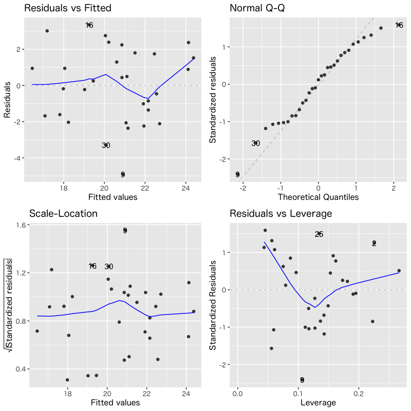

回帰分析
予測と発展的なモデル
(Press ? for help, n and p for next and previous slide)
講義概要
- 第1回: 回帰モデルの考え方と推定
- 第2回: モデルの評価
- 第3回: モデルによる予測と発展的なモデル
回帰分析の復習
線形回帰モデル
- 目的変数 を 説明変数 で説明する関係式を構成
- 説明変数: \(x_1,\dotsc,x_p\) (p次元)
- 目的変数: \(y\) (1次元)
回帰係数 \(\beta_0,\beta_1,\dotsc,\beta_p\) を用いた一次式
\begin{equation} y=\beta_0+\beta_1x_1+\dotsb+\beta_px_p \end{equation}誤差項 を含む確率モデルで観測データを表現
\begin{equation} y_i=\beta_0+\beta_1 x_{i1}+\cdots+\beta_px_{ip}+\epsilon_i \quad (i=1,\dotsc,n) \end{equation}
問題設定
確率モデル
\begin{equation} \boldsymbol{y} =X\boldsymbol{\beta}+\boldsymbol{\epsilon}, \quad\boldsymbol{\epsilon}\sim\text{確率分布} \end{equation}式の評価 : 残差平方和 の最小化による推定
\begin{equation} S(\boldsymbol{\beta}) =(\boldsymbol{y}-X\boldsymbol{\beta})^{\mathsf{T}} (\boldsymbol{y}-X\boldsymbol{\beta}) \end{equation}
解とその一意性
解の条件 : 正規方程式
\begin{equation} X^{\mathsf{T}}X\boldsymbol{\beta} =X^{\mathsf{T}}\boldsymbol{y} \end{equation}解の一意性 : Gram 行列 \(X^{\mathsf{T}}X\) が正則
\begin{equation} \hat{\boldsymbol{\beta}} = (X^{\mathsf{T}}X)^{-1} X^{\mathsf{T}}\boldsymbol{y} \end{equation}
解析の事例
東京の8月の気候の分析
データの一部
東京の8月の気候 日付 気温 降雨 日射 降雪 風向 風速 気圧 湿度 雲量 2022-08-01 30.6 0 24.53 0 SSE 2.8 1010.1 72 8.8 2022-08-02 31.6 0 24.78 0 SSE 2.5 1008.8 71 9.8 2022-08-03 31.5 0 21.24 0 SSE 2.3 1005.1 75 7.3 2022-08-04 24.6 18 3.46 0 NE 2.7 1006 89 10 2022-08-05 23.8 0 7.65 0 NE 2.9 1006.1 83 9.8 2022-08-06 25.2 0 17.06 0 SSE 2.4 1008.1 73 10 2022-08-07 27.6 0 14.45 0 SSE 2.2 1009.3 80 8.3 2022-08-08 29.8 0 22.52 0 S 4.5 1008.5 75 4.8 2022-08-09 30.9 0 25.5 0 S 5.5 1006.9 69 6.8 2022-08-10 30.5 0 25.99 0 S 5.3 1007.2 70 6 2022-08-11 29.5 0 22.9 0 S 5.4 1007.5 75 6 2022-08-12 28.3 2 15.36 0 S 5.8 1007.5 81 9.8 2022-08-13 25.5 47.5 4.53 0 S 4.8 1005.6 94 10 2022-08-14 28.2 0 16.28 0 SSE 2.6 1003 84 8.8
- 気温を説明する5種類の線形回帰モデルを検討
- モデル1 : 気温 = F(気圧)
- モデル2 : 気温 = F(日射)
- モデル3 : 気温 = F(気圧, 日射)
- モデル4 : 気温 = F(気圧, 日射, 湿度)
- モデル5 : 気温 = F(気圧, 日射, 雲量)
分析の視覚化
関連するデータの散布図

Figure 1: 散布図
観測値とあてはめ値の比較

Figure 2: モデルの比較
寄与率
決定係数 (R-squared)
\begin{equation} R^2 = 1-\frac{\sum_{i=1}^n\hat{\epsilon}_i^2}{\sum_{i=1}^n(y_i-\bar{y})^2} \end{equation}自由度調整済み決定係数 (adjusted R-squared)
\begin{equation} \bar{R}^2 = 1-\frac{\frac{1}{n{-}p{-}1}\sum_{i=1}^n\hat{\epsilon}_i^2} {\frac{1}{n{-}1}\sum_{i=1}^n(y_i-\bar{y})^2} \end{equation}- 不偏分散で補正
モデルの評価
決定係数(\(R^{2}\), Adjusted \(R^{2}\))
寄与率によるモデルの比較 目的変数 気温 モデル1 モデル2 モデル3 モデル4 モデル5 気圧 -0.178 (0.127) -0.223*** (0.068) -0.214*** (0.067) -0.242*** (0.068) 日射 0.297*** (0.041) 0.306*** (0.036) 0.366*** (0.056) 0.348*** (0.045) 湿度 0.071 (0.051) 雲量 0.238 (0.161) Constant 206.535 (127.430) 22.969*** (0.690) 247.477*** (68.433) 231.843*** (68.254) 263.717*** (67.941) R2 0.064 0.641 0.741 0.758 0.760 Adjusted R2 0.031 0.628 0.722 0.731 0.733
\(F\)統計量による検定
- 説明変数のうち1つでも役に立つか否かを検定する
- 帰無仮説 \(H_{0}\): \(\beta_1=\dotsb=\beta_p=0\)
- 対立仮説 \(H_{1}\): \(\exists j\;\beta_j\neq0\) (少なくとも1つは役に立つ)
\(F\)統計量: 決定係数(または残差)を用いて計算
\begin{equation} F =\frac{n{-}p{-}1}{p}\frac{R^2}{1-R^2} \end{equation}- \(p\)値: 自由度 \(p,n{-}p{-}1\) の \(F\)分布で計算
モデルの評価
\(F\)統計量
F統計量によるモデルの比較 目的変数 気温 モデル1 モデル2 モデル3 モデル4 モデル5 気圧 -0.178 (0.127) -0.223*** (0.068) -0.214*** (0.067) -0.242*** (0.068) 日射 0.297*** (0.041) 0.306*** (0.036) 0.366*** (0.056) 0.348*** (0.045) 湿度 0.071 (0.051) 雲量 0.238 (0.161) Constant 206.535 (127.430) 22.969*** (0.690) 247.477*** (68.433) 231.843*** (68.254) 263.717*** (67.941) R2 0.064 0.641 0.741 0.758 0.760 Adjusted R2 0.031 0.628 0.722 0.731 0.733 Residual Std. Error 2.463 (df = 29) 1.526 (df = 29) 1.320 (df = 28) 1.298 (df = 27) 1.293 (df = 27) F Statistic 1.973 (df = 1; 29) 51.743*** (df = 1; 29) 39.964*** (df = 2; 28) 28.174*** (df = 3; 27) 28.484*** (df = 3; 27) Note: *p<0.1; **p<0.05; ***p<0.01
\(t\)統計量による検定
- 回帰係数 \(\beta_j\) が回帰式に寄与するか否かを検定する
- 帰無仮説 \(H_{0}\): \(\beta_j=0\)
- 対立仮説 \(H_{1}\): \(\beta_j\neq0\) (\(\beta_j\) は役に立つ)
\(t\)統計量: 各係数ごと，\(\zeta\) は \((X^{\mathsf{T}} X)^{-1}\) の対角成分
\begin{equation} t=\frac{\hat{\beta}_j}{\hat{\sigma}\zeta_{j}} \end{equation}- \(p\)値: 自由度 \(n{-}p{-}1\) の \(t\)分布を用いて計算
モデルの評価
\(t\)統計量
t統計量によるモデルの比較 目的変数 気温 モデル1 モデル2 モデル3 モデル4 モデル5 気圧 -0.178 (0.127) -0.223*** (0.068) -0.214*** (0.067) -0.242*** (0.068) t = -1.405 t = -3.281 t = -3.185 t = -3.566 p = 0.171 p = 0.003 p = 0.004 p = 0.002 日射 0.297*** (0.041) 0.306*** (0.036) 0.366*** (0.056) 0.348*** (0.045) t = 7.193 t = 8.547 t = 6.582 t = 7.699 p = 0.00000 p = 0.000 p = 0.00000 p = 0.00000 湿度 0.071 (0.051) t = 1.390 p = 0.176 雲量 0.238 (0.161) t = 1.474 p = 0.152 Constant 206.535 (127.430) 22.969*** (0.690) 247.477*** (68.433) 231.843*** (68.254) 263.717*** (67.941) t = 1.621 t = 33.277 t = 3.616 t = 3.397 t = 3.882 p = 0.116 p = 0.000 p = 0.002 p = 0.003 p = 0.001
診断プロットによる評価
モデル4

Figure 3: モデル4の診断
モデル5

Figure 4: モデル5の診断
回帰モデルによる予測
予測
新しいデータ (説明変数) \(\boldsymbol{x}\) に対する 予測値
\begin{equation} \hat{y} = (1,\boldsymbol{x}^{\mathsf{T}})\hat{\boldsymbol{\beta}}, \qquad \hat{\boldsymbol{\beta}} = (X^{\mathsf{T}}X)^{-1} X^{\mathsf{T}}\boldsymbol{y} \end{equation}予測値は元データの目的変数の重み付け線形和
\begin{equation} \hat{y} = \boldsymbol{w}(\boldsymbol{x})^{\mathsf{T}}\boldsymbol{y}, \qquad \boldsymbol{w}(\boldsymbol{x})^{\mathsf{T}} = (1,\boldsymbol{x}^{\mathsf{T}}) (X^{\mathsf{T}}X)^{-1} X^{\mathsf{T}} \end{equation}- 重みは元データと新規データの説明変数で決定
予測値の性質
推定量は以下の性質をもつ多変量正規分布
\begin{align} \mathbb{E}[\hat{\boldsymbol{\beta}}] &=\boldsymbol{\beta}\\ \mathrm{Cov}(\hat{\boldsymbol{\beta}}) &=\sigma^{2}(X^{\mathsf{T}}X)^{-1} \end{align}この性質を利用して以下の3つの値の違いを評価
\begin{align} \hat{y}&=(1,\boldsymbol{x}^{\mathsf{T}})\hat{\boldsymbol{\beta}} &&\text{(回帰式による予測値)}\\ \tilde{y}&=(1,\boldsymbol{x}^{\mathsf{T}})\boldsymbol{\beta} &&\text{(最適な予測値)}\\ y&=(1,\boldsymbol{x}^{\mathsf{T}})\boldsymbol{\beta}+\epsilon &&\text{(観測値)} \end{align}- \(\hat{y}\) と \(y\) は独立な正規分布に従うことに注意
信頼区間
最適な予測値との差
差の分布は以下の平均・分散をもつ正規分布に従う
\begin{align} \mathbb{E}[\tilde{y}-\hat{y}] &=(1,\boldsymbol{x}^{\mathsf{T}})\boldsymbol{\beta} -(1,\boldsymbol{x}^{\mathsf{T}})\mathbb{E}[\hat{\boldsymbol{\beta}}] =0\\ \mathrm{Var}(\tilde{y}-\hat{y}) &=\underbrace{\sigma^{2}(1,\boldsymbol{x}^{\mathsf{T}})(X^{\mathsf{T}}X)^{-1} (1,\boldsymbol{x}^{\mathsf{T}})^{\mathsf{T}}}_{\text{\(\hat{\boldsymbol{\beta}}\)の推定誤差による分散}} =\sigma^{2}\gamma_{c}(\boldsymbol{x})^{2} \end{align}正規化による表現
\begin{equation} \frac{\tilde{y}-\hat{y}}{\sigma\gamma_{c}(\boldsymbol{x})} \sim \mathcal{N}(0,1) \end{equation}
信頼区間
未知の分散を不偏分散で推定
\begin{equation} Z= \frac{\tilde{y}-\hat{y}}{\hat{\sigma}\gamma_{c}(\boldsymbol{x})} \sim \mathcal{T}(n{-}p{-}1) \quad (\text{\(t\)分布}) \end{equation}確率 \(\alpha\) の信頼区間
\begin{equation} \mathcal{I}^{c}_{\alpha} = \left( \hat{y}-C_{\alpha}\hat{\sigma}\gamma_{c}(\boldsymbol{x}),\; \hat{y}+C_{\alpha}\hat{\sigma}\gamma_{c}(\boldsymbol{x}) \right) \end{equation}\begin{equation} P(|Z| < {C_{\alpha}} | Z\sim\mathcal{T}(n{-}p{-}1)) =\alpha \end{equation}- 最適な予測値 \(\tilde{y}\) が入ることが期待される区間
予測区間
観測値との差
差の分布は以下の平均・分散をもつ正規分布に従う
\begin{align} \mathbb{E}[y-\hat{y}] &=(1,\boldsymbol{x}^{\mathsf{T}})\boldsymbol{\beta} +\mathbb{E}[\boldsymbol{\epsilon}] -(1,\boldsymbol{x}^{\mathsf{T}}) \mathbb{E}[\hat{\boldsymbol{\beta}}] =0\\ \mathrm{Var}(y-\hat{y}) &=\underbrace{\sigma^{2} (1,\boldsymbol{x}^{\mathsf{T}})(X^{\mathsf{T}}X)^{-1} (1,\boldsymbol{x}^{\mathsf{T}})^{\mathsf{T}} }_{\text{\(\hat{\boldsymbol{\beta}}\)の推定誤差による分散}} +\underbrace{\sigma^{2}}_{\text{誤差の分散}} =\sigma^{2}\gamma_{p}(\boldsymbol{x})^{2} \end{align}正規化による表現
\begin{equation} \frac{y-\hat{y}}{\sigma\gamma_{p}(\boldsymbol{x})} \sim \mathcal{N}(0,1) \end{equation}
予測区間
未知の分散を不偏分散で推定
\begin{equation} Z= \frac{y-\hat{y}}{\hat{\sigma}\gamma_{p}(\boldsymbol{x})} \sim \mathcal{T}(n{-}p{-}1) \quad (\text{\(t\)分布}) \end{equation}確率 \(\alpha\) の予測区間
\begin{equation} \mathcal{I}^{p}_{\alpha} = \left( \hat{y}-C_{\alpha}\hat{\sigma}\gamma_{p}(\boldsymbol{x}),\; \hat{y}+C_{\alpha}\hat{\sigma}\gamma_{p}(\boldsymbol{x}) \right) \end{equation}\begin{equation} P(|Z| < {C_{\alpha}} | Z\sim\mathcal{T}(n{-}p{-}1)) =\alpha \end{equation}- 観測値 \(y\) が入ることが期待される区間
- \(\gamma_{p}>\gamma_{c}\) なので信頼区間より広くなる
実習
R : 予測値と区間推定
関数
stats::predict()を用いた予測#' モデルの作成 toy_train <- tibble(x1 = ..., x2 = ..., y = ...) toy_lm <- lm(y ~ x1 + x2, data = toy_train) toy_train_fitted <- predict(toy_lm) # あてはめ値の計算 #' 新しいデータの予測 toy_test <- tibble(x1 = ..., x2 = ...) # 予測したいデータの説明変数 toy_test_fitted <- predict(toy_lm, # 予測値の計算 newdata = toy_test) toy_test_conf <- predict(toy_lm, newdata = toy_test, # 信頼区間 interval="confidence", level=0.95) toy_test_pred <- predict(toy_lm, newdata = toy_test, # 予測区間 interval="prediction", level=0.95) #' 信頼区間，予測区間の水準の既定値は0.95
R : モデルからの予測
東京の気候データによる例
#' 9,10月のデータでモデルを構築し，8,11月のデータを予測 #' データの整理 tw_data <- read_csv("data/tokyo_weather.csv") tw_train <- tw_data |> # モデル推定用データ filter(month %in% c(9,10)) # %in% は集合に含むかどうかを判定 tw_test <- tw_data |> # 予測用データ filter(month %in% c(8,11)) #' モデルの構築 tw_model <- temp ~ solar + press # モデルの定義 tw_lm <- lm(tw_model, data = tw_train) # モデルの推定 summary(tw_lm) # モデルの評価 #' あてはめ値の計算 tw_train_fitted <- tw_train |> mutate(fitted = predict(tw_lm)) # データのあてはめ値 tw_test_fitted <- tw_test |> mutate(fitted = predict(tw_lm, newdata = tw_test)) # 予測
グラフ表示の例
#' 予測結果を図示 bind_rows(tw_train_fitted, tw_test_fitted) |> # 2つのデータフレームを結合 mutate(month = as_factor(month)) |> # 月を因子化して表示に利用 ggplot(aes(x = fitted, y = temp)) + geom_point(aes(colour = month, shape = month)) + # 月ごとに色と形を変える geom_abline(slope = 1, intercept = 0, # 予測が完全に正しい場合のガイド線 colour = "gray") + labs(y = "observed")
R : 区間表示のための関数
関数
ggplot2::geom_errorbar(): 区間の表示geom_errorbar( mapping = NULL, data = NULL, stat = "identity", position = "identity", ..., na.rm = FALSE, orientation = NA, show.legend = NA, inherit.aes = TRUE ) #' mapping: 区間を表すために xmin,xmax または ymin,ymax を与える #' data: データフレーム #' ...: その他の描画オプション #' orientation: 特別な場合に指定 (一般に向きは mapping で自動的決定) #' 詳細は '?ggplot2::geom_errorbar' を参照- 関数
stats::predict()の返り値 ’lwr/upr’ を用いればよい
- 関数
練習問題
東京の気候データを用いて以下の実験を試みなさい
- 8月のデータで回帰式を推定する
- 上記のモデルで9月のデータを予測する
#' 特定の月のデータを取り出すには，例えば以下のようにすればよい tw_data <- read_csv("data/tokyo_weather.csv") tw_train <- tw_data |> filter(month == 8) # 単一の数字と比較 tw_test <- tw_data |> filter(month %in% c(9,10)) # 集合と比較
発展的なモデル
非線形性を含むモデル
- 目的変数 \(y\)
- 説明変数 \(x_1,\dotsc,x_p\)
- 説明変数の追加で対応可能
- 交互作用 (交差項) : \(x_ix_j\) のような説明変数の積
- 非線形変換 : \(\log(x_k)\) のような関数による変換
カテゴリカル変数を含むモデル
- 数値ではないデータ
- 悪性良性
- 血液型
- 適切な方法で数値に変換して対応:
- 2値の場合は 1,0 (真，偽) を割り当てる
- 悪性 : 1
- 良性 : 0
- 3値以上の場合は ダミー変数 を利用する (カテゴリ数-1個)
- A型 : (1,0,0)
- B型 : (0,1,0)
- O型 : (0,0,1)
- AB型 : (0,0,0)
- 2値の場合は 1,0 (真，偽) を割り当てる
実習
R : 線形でないモデル式の書き方
- 交互作用を記述するためには特殊な記法がある
- 非線形変換はそのまま関数を記述すればよい
1つの変数の多項式は関数
I()を用いる#' 目的変数 Y, 説明変数 X1,X2,X3 #' 交互作用を含む式 (formula) の書き方 Y ~ X1 + X1:X2 # X1 + X1*X2 Y ~ X1 * X2 # X1 + X2 + X1*X2 Y ~ (X1 + X2 + X3)^2 # X1 + X2 + X3 + X1*X2 + X2*X3 + X3*X1 #' 非線形変換を含む式 (formula) の書き方 Y ~ f(X1) # f(X1) (fは任意の関数) Y ~ X1 + I(X2^2) # X1 + X2^2
R : カテゴリカル変数の取り扱い
- 何も宣言しなくても通常は適切に対応してくれる
陽に扱う場合は関数
factor()を利用する#' factor属性の与え方 X <- c("A", "S", "A", "B", "D") Y <- c(85, 100, 80, 70, 30) toy_data1 <- tibble(X, Y) toy_data2 <- toy_data1 |> # 因子化 mutate(X2 = factor(X)) # 関数as_factor()を用いてもよい str(toy_data2) # 作成したデータフレームの素性を見る toy_data3 <- toy_data2 |> # 順序付き(levels)の因子化 mutate(X3 = factor(X, levels=c("S","A","B","C","D"))) str(toy_data3) # toy_data2とはfactorの順序が異なる toy_data4 <- toy_data2 |> mutate(Y2 = factor(Y > 60)) # 条件による因子化 str(toy_data4) # 条件の真偽で2値に類別される
練習問題
- 東京の気候データ(9-11月)を用いて
気温を回帰する以下のモデルを検討しなさい
- 日射量，気圧，湿度の線形回帰モデル
- 湿度の対数を考えた線形回帰モデル
- 最初のモデルにそれぞれの交互作用を加えたモデル
- 東京の気候データ(1年分)を用いて
気温を回帰する以下のモデルを検討しなさい
- 降水の有無を表すカテゴリカル変数を用いたモデル
(雨が降ると気温が変化することを検証する) - 上記に月をカテゴリカル変数として加えたモデル
(月毎の気温の差を考慮する)
- 降水の有無を表すカテゴリカル変数を用いたモデル
補足
R : モデルの探索
- 変数が増えるとモデルの比較が困難
関数
stats::step()により自動化することができる#' モデルの探索 adv_data <- read_csv('https://www.statlearning.com/s/Advertising.csv') summary(lm(sales ~ radio, data = adv_data)) summary(lm(sales ~ TV + radio, data = adv_data)) summary(lm(sales ~ TV + radio + newspaper, data = adv_data)) summary(adv_init <- lm(sales ~ TV * radio * newspaper, data = adv_data)) adv_opt <- step(adv_init) # step関数による探索 (最大のモデルから削減増加を行う) summary(adv_opt) # 探索された(準)最適なモデルの確認- 全探索ではないので最適とは限らないことに注意は必要
R : package::broom
- 関数 base::summary() の tidyverse 版
関数 stats::lm() などの結果を tibble 形式で表示
- 関数 broom::tidy : 推定結果のまとめ
- 関数 broom::glance : 評価指標(統計量)のまとめ
- 関数 broom::augment : 入出力データのまとめ
#' 推定結果の tibble 形式での表示 broom::tidy(adv_opt) # coef(summary(adv_opt)) と同じ内容 broom::glance(adv_opt) # 決定係数やF値などを整理 broom::augment(adv_opt) # あてはめ値・残差などを整理
R : package::car
- 回帰モデルの評価
- 与えられたデータの再現
- 新しいデータの予測
モデルの再構築のための視覚化
- residual plots: 説明変数・予測値と残差の関係
- marginal-model plots: 説明変数と目的変数・モデルの関係
- added-variable plots: 説明変数・目的変数をその他の変数で回帰したときの残差の関係
- component+residual plots: 説明変数とそれ以外の説明変数による残差の関係
などが用意されている
例題
- これまでに用いたデータでモデルを更新して評価してみよう
- 変数間の線形回帰の関係について仮説を立てる
- モデルのあてはめを行い評価する
- 説明力があるのか? (\(F\)統計量，\(t\)統計量，決定係数)
- 残差に偏りはないか? (様々な診断プロット)
- 変数間の線形関係は妥当か? (様々な診断プロット)
- 検討結果を踏まえてモデルを更新する (評価の繰り返し)
次回の予定
- 第1回: 主成分分析の考え方
- 第2回: 分析の評価と視覚化